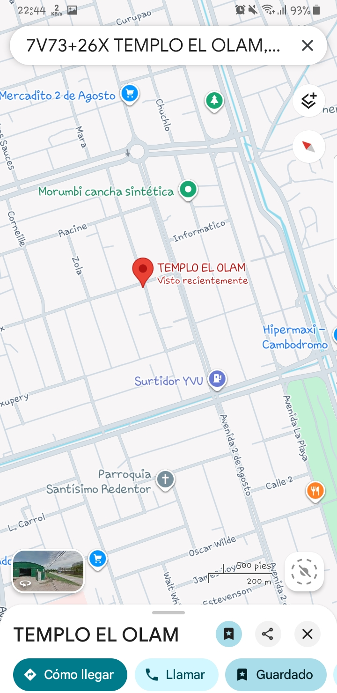
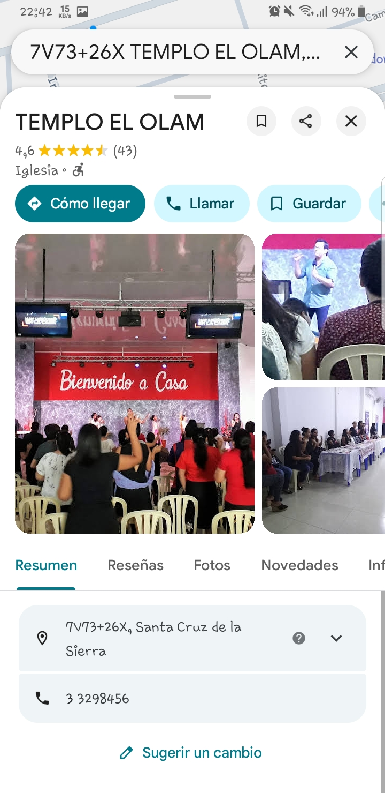

Las clases y talleres se realizan en instalaciones facilitadas por una iglesia aliada ubicada dentro del área urbana de la ciudad. La ubicación es estratégica porque permite el acceso de jóvenes y adultos provenientes de distintos barrios y zonas periféricas de Santa Cruz.

Ubicación referencial
Instalaciones donde se realizan las capacitaciones